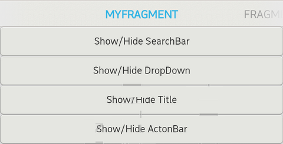

A TabPageController represents an Tab Bar that can add fragements to Tab bar. tab bar will show the Fragment name that developer named. While user touch the fragment tile on the tab bar the screen will show that fragment page. Or Scroller the fragments content left or right will also change the fragment page.

In this section, you can know how to use the TabPageController.
class MyPageChangeListener : public IPageChangeListener {
private:
ActionBarTestPage mpPage;
public:
explicit MyPageChangeListener(ActionBarTestPage page)
: mpPage(page) {
}
void onPageScrolled(int32_t position, float positionOffset,
int32_t positionOffsetPixels) {
}
void onPageSelected(int32_t position) {
}
void onPageScrollStateChanged(int32_t state) {
}
};
void MyPage::onInit(Persistence* const p) {
mpController = new TabPageController(this);
// 1. Add fragment without unique id.
// 2. mpFg1,mpFg2 and mpFg3 are all fragment and FragmentA， FragmentB and FragmentC are their title name
mpController->addFragment(String("FragmentA"), mpFg1);
mpController->addFragment(String("FragmentB"), mpFg2);
mpController->addFragment(String("FragmentC"), mpFg3);
// new the tab bar click listener to inform developer fragment change.
// If chnage the page it will call onPageSelected or onPageScrolled.
mpPageChangeListener = new MyPageChangeListener(this);
mpController->setOnPageChangeListener(mpPageChangeListener);
// Set the init fragment page.
mpController->setCurrentItem(0);
mpScene->attachController(mpController);
mpScene->setupSceneLayout();
}
Add fragment to TabPageController.
// Add fragment to TabPageController. Title using the string
void addFragment(const gaia::base::String& title,
gaia::core::Fragment* fragment);
// Add fragment to TabPageController.Title using the resource id
void addFragment(int32_t resourceIdOfTitle,
gaia::core::Fragment* fragment);
// Add fragment with unique id to TabPageController.
// Title using the string, and give this fragment unique id.
void addFragment(const gaia::base::String& title,
gaia::core::Fragment* fragment, int32_t id);
// Add fragment with unique id to TabPageController.
// Title using the resource id, and give this fragment unique id.
void addFragment(int32_t resourceIdOfTitle,
gaia::core::Fragment* fragment, int32_t id);
//Get current position of the fragment(tab content) which is displayed
int32_t getCurrentItem();
//Get current id of the fragment(tab content) which is displayed
int32_t getCurrentId();
//Set the currently selected fragment(tab content).
//item ==>Item index to select
void setCurrentItem(int32_t item);
//Set enable rearrangement function or not, default turn on.
void setRearrangementEnabled(bool enable);
//Return the sequence result of user making tabs rearrangement last time.
gaia::base::String getSavedSequence() const;
//Set a listener that will be invoked whenever the page changes or is incrementally scrolled.
void setOnPageChangeListener(gaia::ui::IPageChangeListener* listener);
//Returns the number of pages that will be retained to either side of the
//current page in the view hierarchy in an idle state. Defaults to 1.
int32_t getOffscreenPageLimit();
//Set the number of pages that should be retained to either side of the
// current page in the view hierarchy in an idle state. Pages beyond this
// limit will be recreated from the adapter when needed.
// This is offered as an optimization. If you know in advance the number
// of pages you will need to support or have lazy-loading mechanisms in place
// on your pages, tweaking this setting can have benefits in perceived smoothness
// of paging animations and interaction. If you have a small number of pages (3-4)
// that you can keep active all at once, less time will be spent in layout for
// newly created view subtrees as the user pages back and forth.
void setOffscreenPageLimit(int32_t limit);